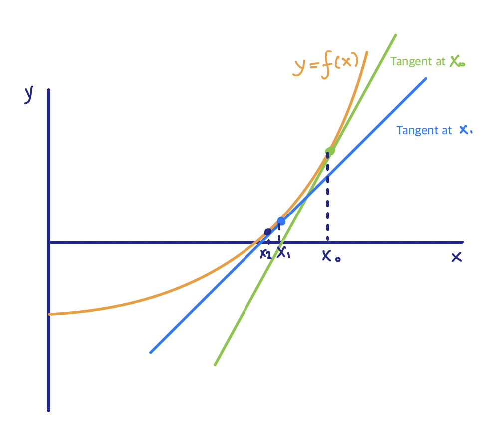

7.1 Fitting a Logistic Regression model
The logistic regression starts by directly modeling the conditional probability \[\eta(x) = P(Y=1|X=x)\] where \(\eta(x)\) is a function bounded in \([0,1]\).
Specifically, consider a link function \(g\) that maps \(\eta(x)\) into \((-\infty, \infty)\), i.e. \[g\Bigl(\eta(x) \Bigr) = \mathbf{x}^T \beta\]
Based on this formulation, we can see that the response \(Y\) conditional on \(X\) follows a Bernoulli distribution:
\[P(Y = y_i | X=x_i) = \eta(x_i)^{y_i} \Bigl( 1- \eta(x_i)\Bigr)^{1-y_i}\] where we defined as \[\eta(x) = P(Y=1|X=x)\,\, \text{ and } \,\, 1-\eta(x) = P(Y=0|X=x)\]
For the Logistic Regression, we use the logit link function that is defined as
\[\begin{align*} & \log \frac{\eta(x)}{1-\eta(x)} = x^T \beta\,\, \,\, \Leftrightarrow\,\, \,\, \eta(x) = \frac{\exp (x^T \beta)}{1 + \exp (x^T \beta)} \end{align*}\] The factor \(\log\frac{\eta(x)}{1-\eta(x)}\) is called log-odds, and we model it as a linear function of \(x\).
7.1.1 Maximum Likelihood Approach
At each data point we have observations \((x_i, y_i, \eta(x_i))\) that we want to use to estimate \(\eta(x)\) or equivalently \(\beta\). Instead of starting by minimizing a squared error loss (for a given loss function), as we did in the regression with continuous response case, we follow a maximum likelihood approach.
Maximum likelihood estimation is a method that provides the most likely value for a parameter, given the data we observed. In a parametric framework, the likelihood function is a function of the model parameters and the data, and the maximum likelihood estimator is obtained by maximizing the likelihood function with respect to the parameters.
Recall, that conditionally on \(X\) the response \(Y\) follows a Bernoulli distribution with probability \(\eta(x)\). Therefore, the likelihood function is written as \[\begin{align*} \mathcal{L}(\beta|\mathbf{y}, \mathbf{x}) &= \prod_{i=1}^{n} p(y_i|x_i \beta)\\ &= \prod_{i=1}^{n} \eta(x_i)^{y_i} \Bigl( 1-\eta(x_i)\Bigr)^{1-y_i} \end{align*}\] To fit the Logistic Regression model, we need to maximize the likelihood function with respect to the parameters \(\beta\): \[\max_{\beta} \mathcal{L}(\beta |\mathbf{y}, \mathbf{x}) \]
This is equivalent to maximizing the \(\log\) of the likelihood, the so-called log-likelihood function: \[\begin{align*} \ell (\beta|\mathbf{y}, \mathbf{x}) &= \sum_{i=1}^{n} \log \Bigg\{\eta(x_i)^{y_i} \Bigl( 1-\eta(x_i)\Bigr)^{1-y_i} \Biggr\}\\ &= \Bigg\{\sum_{i=1}^{n} y_i \log \frac{\eta(x_i)}{1- \eta(x_i)} + \log \Bigl( 1-\eta(x_i)\Bigr)\Biggr\}\\ \end{align*}\]
Recall that we defined \[\log \frac{\eta(x)}{1-\eta(x)} = x^T \beta\]
Combining all the above, after a couple of lines of algebra, the log-likelihood function becomes: \[\ell (\beta|\mathbf{y}, \mathbf{x}) = \sum_{i=1}^{n}\Bigg\{ y_i x_i^T \beta - \log \Bigl(1+ \exp(x_i^T \beta) \Bigr)\Biggr\}\]
and the Maximum Likelihood Estimator (MLE) \(\hat{\beta}\) is obtained my maximizing \[\max_{\beta} \ell (\beta|\mathbf{y}, \mathbf{x}) = \max_{\beta} \sum_{i=1}^{n}\Bigg\{ y_i x_i^T \beta - \log \Bigl(1+ \exp(x_i^T \beta) \Bigr)\Biggr\}\]
Note here that \(\beta\) here is a vector, so we need to compute the gradient vector \(\frac{\partial \ell(\beta|\mathbf{y}, \mathbf{x})}{\partial \beta}\), set it equal to 0, solve with respect to \(\beta\), and check the Hessian matrix \(\frac{\partial^2 \ell(\beta|\mathbf{y}, \mathbf{x})}{\partial \beta \partial \beta^T}\) to ensure that our solution is indeed a maximum.
Solving for the MLE
Taking the derivative with respect to \(\beta\), and using chain rule along the way, the gradient computes as
\[\begin{align*} \frac{\partial \ell(\beta|\mathbf{y}, \mathbf{x})}{\partial \beta} &= \sum_{i=1}^{n} \frac{\partial }{\partial \beta} \Bigl( y_i x_i^T \beta \Bigr) - \frac{\partial }{\partial \beta} \Bigl(\log \Bigl(1+ \exp(x_i^T \beta) \Bigr) \Bigr)\\ &= \sum_{i=1}^{n} y_i x_i^T - \sum_{i=1}^{n} \frac{1}{1+ \exp(x_i^T \beta) } \cdot \frac{\partial }{\partial \beta} \biggl( 1+ \exp(x_i^T \beta) \biggr)\\ &= \sum_{i=1}^{n} y_i x_i^T - \sum_{i=1}^{n} \frac{1}{1+ \exp(x_i^T \beta) } \cdot \exp(x_i^T \beta) x_i^T\\ &= \sum_{i=1}^{n} y_i x_i^T - \sum_{i=1}^{n} \frac{\exp(x_i^T \beta) \, x_i^T}{1+ \exp(x_i^T \beta) } \end{align*}\]
To compute the Hessian, we need to take the second derivative with respect to \(\beta\), using chain rule in a similar way:
\[\begin{align*} \frac{\partial^2 \ell(\beta|\mathbf{y}, \mathbf{x})}{\partial \beta \partial \beta^T} &= \sum_{i=1}^{n} \frac{\partial }{\partial \beta} y_i x_i^T - \frac{\partial }{\partial \beta} \biggl(\frac{\exp(x_i^T \beta) \, x_i^T}{1+ \exp(x_i^T \beta)} \biggr) \\ &= - \sum_{i=1}^{n} \frac{\partial }{\partial \beta} \biggl(\frac{\exp(x_i^T \beta) \, x_i^T}{1+ \exp(x_i^T \beta)} \biggr) \\ &= - \sum_{i=1}^{n} \frac{\partial }{\partial (\exp(x_i^T \beta)) } \biggl(\frac{\exp(x_i^T \beta) \, x_i^T}{1+ \exp(x_i^T \beta)} \biggr) \frac{\partial (\exp(x_i^T \beta) }{\partial \beta} \\ &= - \sum_{i=1}^{n} x_i \frac{\exp (x^T \beta)}{1 + \exp (x^T \beta)} \frac{1}{1 + \exp (x^T \beta)} x_i^T\\ &= - \sum_{i=1}^{n} x_i \eta(x_i) \bigl( 1- \eta(x_i) \bigr) x_i^T \end{align*}\]
Finally, we have
- Gradient Vector
\[\frac{\partial \ell(\beta|\mathbf{y}, \mathbf{x})}{\partial \beta} = \sum_{i=1}^{n} y_i x_i^T - \sum_{i=1}^{n} \frac{\exp(x_i^T \beta) \, x_i^T}{1+ \exp(x_i^T \beta) } = \mathbf{X}^T (\mathbf{y} - \mathbf{p}),\] where \[p_i = \eta(x_i) = P(Y=1|X=x_i)\]
- Hessian Matrix
\[\frac{\partial^2 \ell(\beta|\mathbf{y}, \mathbf{x})}{\partial \beta \partial \beta^T} = - \sum_{i=1}^{n} x_i \eta(x_i) \bigl( 1- \eta(x_i) \bigr)x_i^T = - \mathbf{X}^T \mathbf{W} \mathbf{X}\]
The Hessian matrix is negative semi-definite, which means that the log-likelihood function is concave, and as a consequence any local maximum is global maximum.
We do not have an explicit solution for the MLE in the logistic regression, but it can be easily obtained using an iterative Newton-Raphson approach.
Newton-Raphson for Logistic MLE

\[f(x) \approx f(x_0) + f'(x_0) (x-x_0) \] \[\Longrightarrow x = x_0 - \frac{f(x_0)}{f'(x_0)}\]
In our case: \[\begin{align*} \beta &= \beta_0 + (\mathbf{X}^T \mathbf{W} \mathbf{X})^{-1} \mathbf{X}^T (\mathbf{y}-\mathbf{p})\\ &= (\mathbf{X}^T \mathbf{W} \mathbf{X})^{-1} \mathbf{X}^T \mathbf{W} \mathbf{X} \beta_0 \\ &\,\,\,\, + \mathbf{W}^{-1}(\mathbf{y} - \mathbf{p}) \end{align*}\]
We can also obtain the Logistic Regression MLE via a Reweighted LS Algorithm:
Start with some initial values \(\beta^0\).
Calculate the corresponding \(p_i^0 = \eta^0 (x_i)\) for \(i=1, \ldots, n\).
Define \(W = diag(p_i^0(1-p_i^0))_{i=1}^{n}\).
Calculate \[\mathbf{z} = \mathbf{X} \beta^0 + \mathbf{W}^{-1}(\mathbf{y} - \mathbf{p}^0)\]
Update \(\beta^0 \leftarrow \beta^1\) with \[\beta^1 = (\mathbf{X}^T \mathbf{W} \mathbf{X})^{-1} \mathbf{X}^T \mathbf{W} \mathbf{z}\]
Iterate the above steps until convergence.